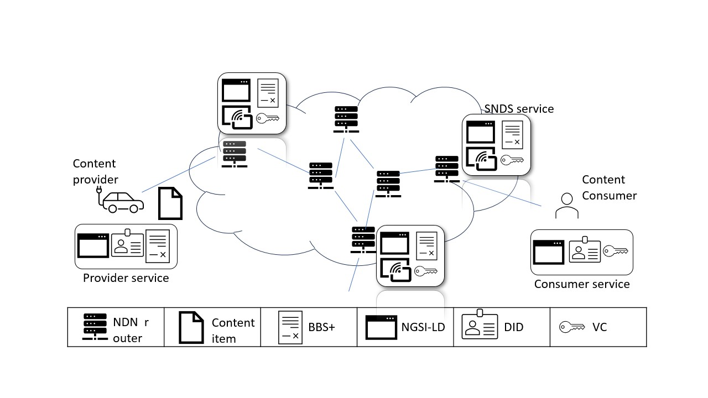

Welcome
This is the home page of the Secure Named Data Sharing (SNDS) project.
The SNDS project is funded by NGI SARGASSO.
About
SNDS is set to revolutionize the Named-Data Networking (NDN) ICN architecture by introducing extensions tailored for query-based content retrieval, fine-grained storage, and content updates—creating an optimal foundation for a Content Delivery Network (CDN) underlay. Prioritizing data security, SNDS will integrate innovations from our previous work on Digital Identities, ensuring content security and privacy without compromising content authentication, integrity, or access control. Unlike traditional ICN architectures, SNDS' enhancements to NDN will facilitate advanced data sharing, including data encoding following specific models, fine-grained data retrieval, and temporally-defined data access. The project also boasts features like decentralized content integrity and authenticity through Digital Identifiers, especially the Decentralized Identifiers, complemented by BBS+ digital signatures which support Zero-Knowledge Proofs, offering a trust mechanism superior to NDN's PKI-based scheme. SNDS further plans to refine content storage operations by content producers, transitioning from NDN's existing system and propelling data sovereignty. These novel operations, scheduled for testing on the global NDN testbed—a collaboration between AUEB and UM—aim to cultivate interoperability based on the NDN framework. Through SNDS, the vision is a global CDN-inspired infrastructure utilizing NDN, resonating with the objectives of the NGI initiative, thereby pioneering a forward-thinking, human-centric Next Generation Internet. With the joint expertise of EU's AUEB and US's UM teams, SNDS endeavors to redefine the digital content landscape, emphasizing content identification, security, and verifiable credentials.
SNDS Design Overview
The SNDS architecture introduces a sophisticated networking platform where Next Generation technologies are exploited in order to enhance the quality and quantity of services offered by CDNs. An overview of the SNDS design and the technologies that compose the SNDS ecosystem are presented in the following figure.
For clarity of purposes and without loss of generality, the figure assumes a simple topology of two IP-based end-users: a content consumer, who requests a piece of information, and a content provider, who supplies a piece of information. The two end-users transfer content through the NDN-based CDN network. The design proposes an incremental deployment scheme where the core CDN network is NDN-enabled and the end-users are in typical IP-based networks. The interfacing of the two networks takes place at the NDN edge routers, which also host the SNDS service.
The SNDS service is the cornerstone of the SNDS architecture. First, it performs proxying duties; it receives, translates, and forwards requests from the IP end-users to the NDN core network and vice versa. Second, it supports the NGSI-LD API, thus being able to serve the NGSI-LD requests sent by the end-users. Third, it dynamically creates, relocates, or removes individual Digital Twins (DTs) per content provider, therefore assisting provider mobility and information updates. Fourth, it incorporates the required security methods, namely, Decentralized Identifiers (DIDs), Verifiable Credentials (VCs), and BBS+ signtures.
News
- 28 June 2024 Poster Named Data Networking for Data Spaces presented at ISCC 2024 Conference
- 26 June 2024 Paper Certificate Management for Cloud-Hosted Digital Twins presented at MoCS 2024 Workshop
- 22 Apr. 2024 Paper Data integrity protection for data spaces presented at EuroSec 2024 Workshop
- 14 Mar. 2024 Presentation to Distributed Systems Group, TU Wien
- 28 Feb. 2024 Presentation to High Performance Networks Group, Bristol University
- 09 Feb. 2024 Presentation to Networking group, Bristol University
- 06 Feb. 2024 Presentation to Cybersecurity group at TU Delft
- 19 Jan. 2024 Presentation to Business Analytics at AUEB
- 17 Jan. 2024 Presentation to Networks group, Sussex University
- 29 Dec. 2023 Presentation to Infostrada Communications
- 05 Dec. 2023 Presentation to MMLAB
- 04 Dec. 2023 Presentation to I-SENSE/ICCS
SNDS presentation
SNDS poster (from ISCC 2024)
SNDS security architecture presentation (from EuroSec 2024)
SNDS digital twins presentation (from MoCS 2024)
The SNDS team
Athens University of Economics and Business
AUEB participates through the Mobile Multimedia Laboratory.
University of Memphis
The University of Memphis.